1 / 24 Left of Bang / Right of Bang
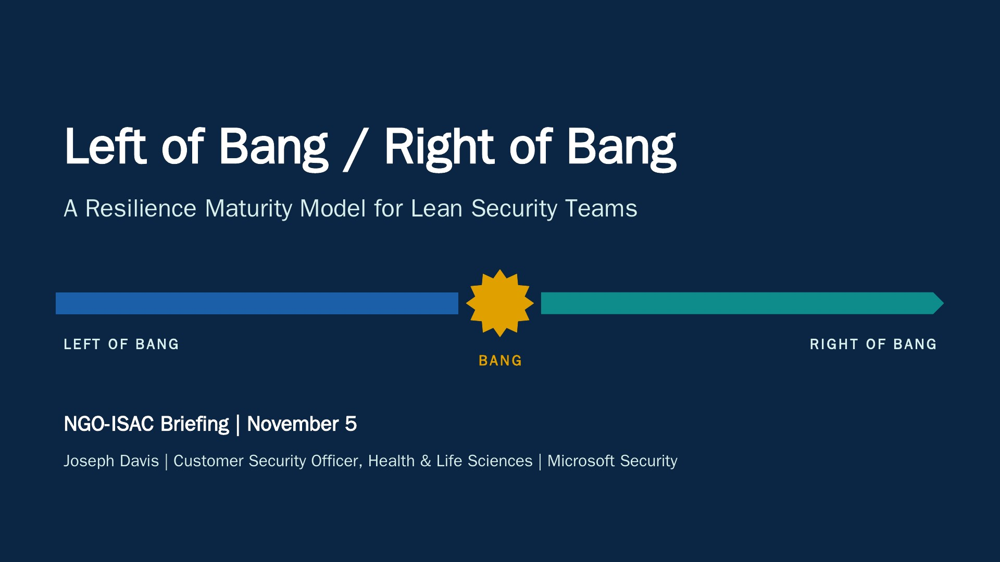
Slide 1 text
Left of Bang / Right of Bang
A Resilience Maturity Model for Lean Security Teams
LEFT OF BANG
BANG
RIGHT OF BANG
NGO-ISAC Briefing | November 5
Joseph Davis | Customer Security Officer, Health & Life Sciences | Microsoft Security
2 / 24 Nonprofits carry real risk with very small teams
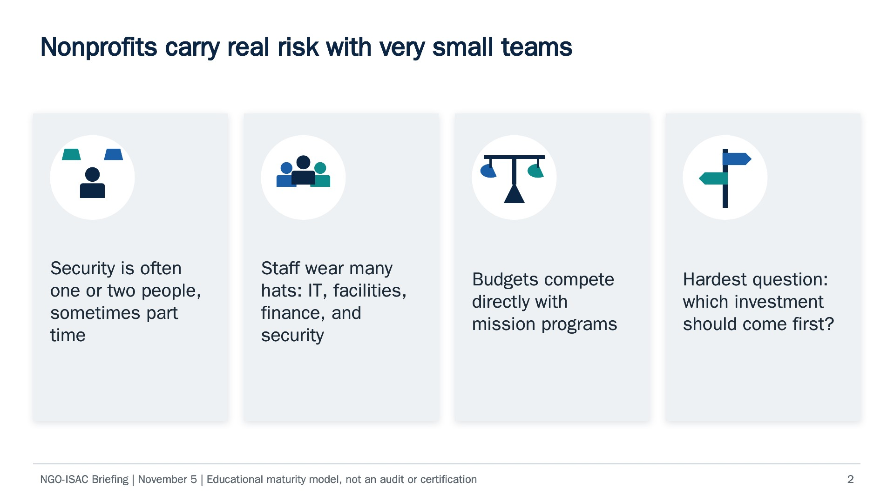
Slide 2 text
Nonprofits carry real risk with very small teams
Security is often one or two people, sometimes part time
Staff wear many hats: IT, facilities, finance, and security
Budgets compete directly with mission programs
Hardest question: which investment should come first?
NGO-ISAC Briefing | November 5 | Educational maturity model, not an audit or certification
2
3 / 24 The "bang" is the moment a disruptive cyber incident hits
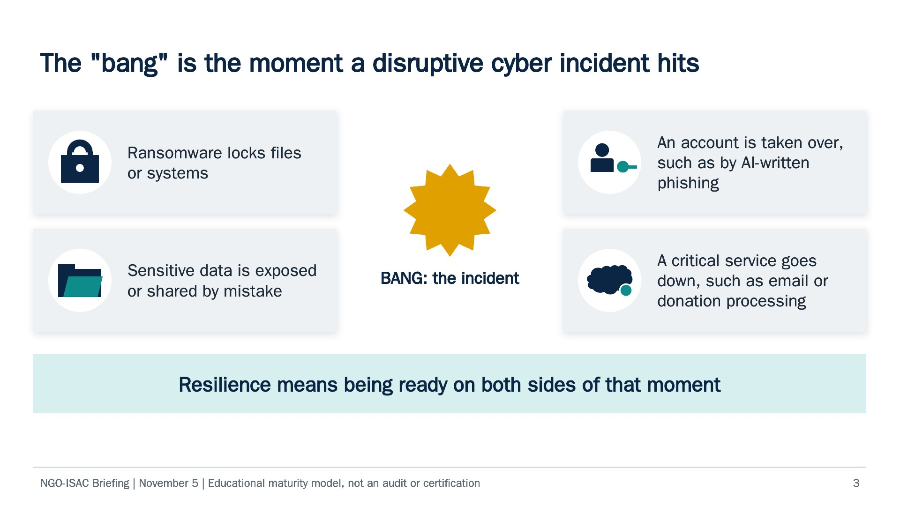
Slide 3 text
The "bang" is the moment a disruptive cyber incident hits
Ransomware locks files or systems
An account is taken over, such as by AI-written phishing
Sensitive data is exposed or shared by mistake
A critical service goes down, such as email or donation processing
BANG: the incident
Resilience means being ready on both sides of that moment
NGO-ISAC Briefing | November 5 | Educational maturity model, not an audit or certification
3
4 / 24 Resilience spans the whole timeline, not just prevention
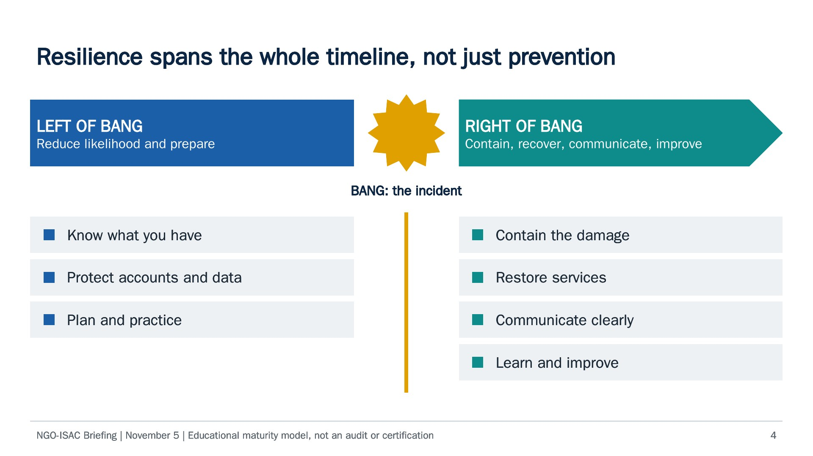
Slide 4 text
Resilience spans the whole timeline, not just prevention
LEFT OF BANG
Reduce likelihood and prepare
RIGHT OF BANG
Contain, recover, communicate, improve
BANG: the incident
Know what you have
Protect accounts and data
Plan and practice
Contain the damage
Restore services
Communicate clearly
Learn and improve
NGO-ISAC Briefing | November 5 | Educational maturity model, not an audit or certification
4
5 / 24 Four lenses show where your resilience is strong and where it is thin
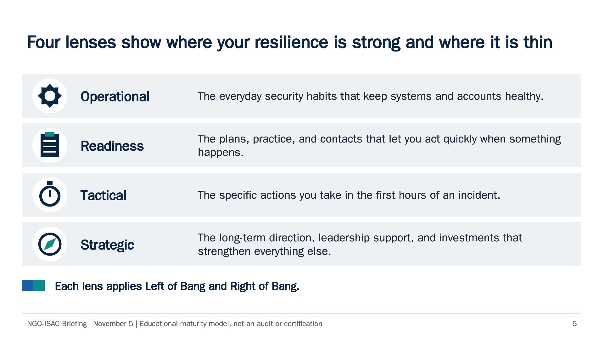
Slide 5 text
Four lenses show where your resilience is strong and where it is thin
Operational
The everyday security habits that keep systems and accounts healthy.
Readiness
The plans, practice, and contacts that let you act quickly when something happens.
Tactical
The specific actions you take in the first hours of an incident.
Strategic
The long-term direction, leadership support, and investments that strengthen everything else.
Each lens applies Left of Bang and Right of Bang.
NGO-ISAC Briefing | November 5 | Educational maturity model, not an audit or certification
5
6 / 24 Operational: get the everyday basics right
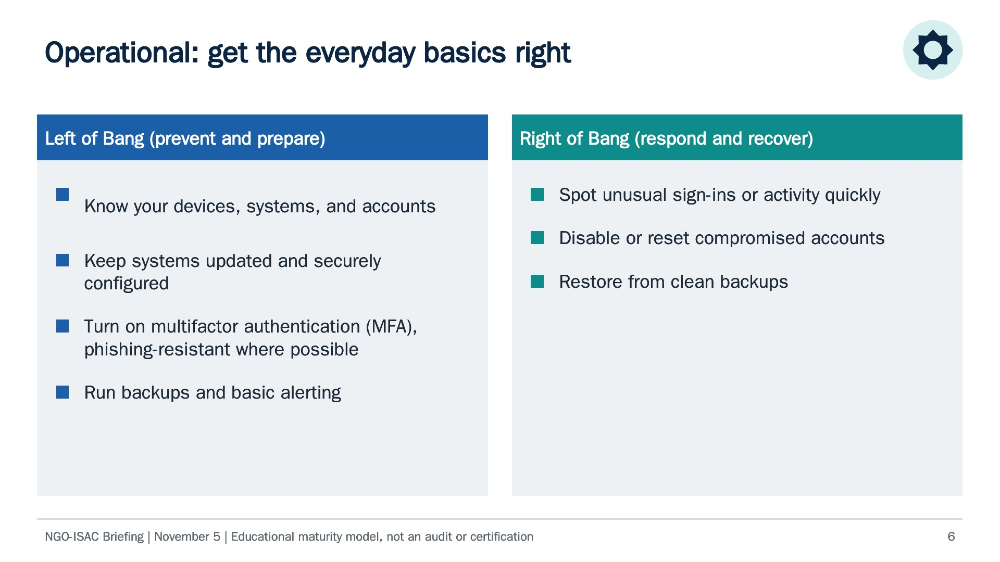
Slide 6 text
Operational: get the everyday basics right
Left of Bang (prevent and prepare)
Know your devices, systems, and accounts
Keep systems updated and securely configured
Turn on multifactor authentication (MFA), phishing-resistant where possible
Run backups and basic alerting
Right of Bang (respond and recover)
Spot unusual sign-ins or activity quickly
Disable or reset compromised accounts
Restore from clean backups
NGO-ISAC Briefing | November 5 | Educational maturity model, not an audit or certification
6
7 / 24 Readiness: decide before the crisis, not during it
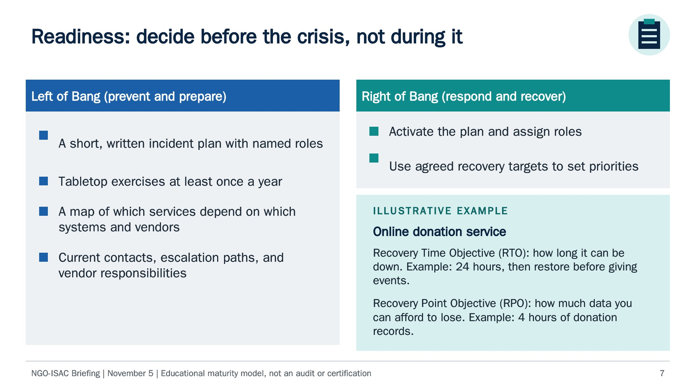
Slide 7 text
Readiness: decide before the crisis, not during it
Left of Bang (prevent and prepare)
A short, written incident plan with named roles
Tabletop exercises at least once a year
A map of which services depend on which systems and vendors
Current contacts, escalation paths, and vendor responsibilities
Right of Bang (respond and recover)
Activate the plan and assign roles
Use agreed recovery targets to set priorities
ILLUSTRATIVE EXAMPLE
Online donation service
Recovery Time Objective (RTO): how long it can be down. Example: 24 hours, then restore before giving events.
Recovery Point Objective (RPO): how much data you can afford to lose. Example: 4 hours of donation records.
NGO-ISAC Briefing | November 5 | Educational maturity model, not an audit or certification
7
8 / 24 Tactical: the first hour matters most
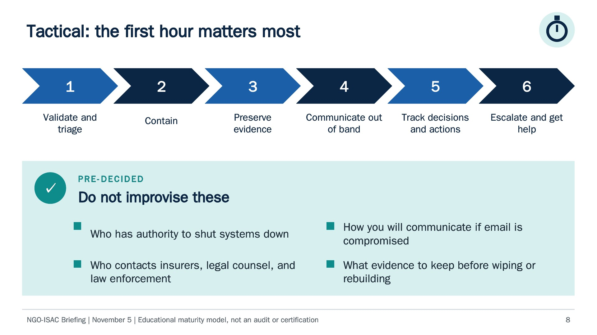
Slide 8 text
Tactical: the first hour matters most
1
Validate and triage
2
Contain
3
Preserve evidence
4
Communicate out of band
5
Track decisions and actions
6
Escalate and get help
✓
PRE-DECIDED
Do not improvise these
Who has authority to shut systems down
How you will communicate if email is compromised
Who contacts insurers, legal counsel, and law enforcement
What evidence to keep before wiping or rebuilding
NGO-ISAC Briefing | November 5 | Educational maturity model, not an audit or certification
8
9 / 24 Strategic: a sequenced journey, not a big-bang transformation
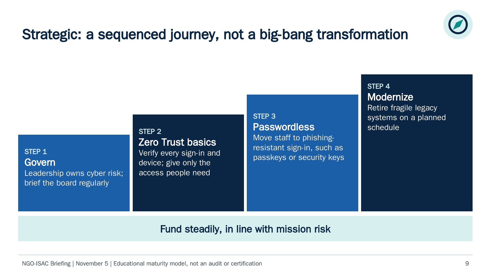
Slide 9 text
Strategic: a sequenced journey, not a big-bang transformation
STEP 1
Govern
Leadership owns cyber risk; brief the board regularly
STEP 2
Zero Trust basics
Verify every sign-in and device; give only the access people need
STEP 3
Passwordless
Move staff to phishing-resistant sign-in, such as passkeys or security keys
STEP 4
Modernize
Retire fragile legacy systems on a planned schedule
Fund steadily, in line with mission risk
NGO-ISAC Briefing | November 5 | Educational maturity model, not an audit or certification
9
10 / 24 The resilience matrix: eight boxes, one picture
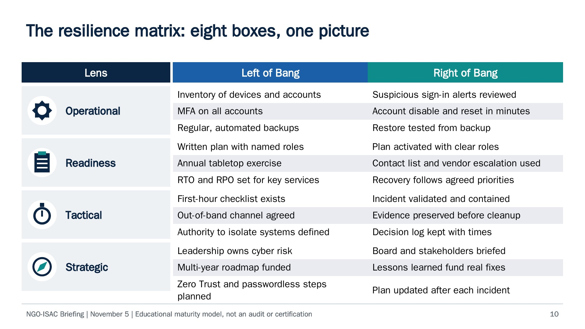
Slide 10 text
The resilience matrix: eight boxes, one picture
Left of Bang
Right of Bang
Lens
Inventory of devices and accounts
Suspicious sign-in alerts reviewed
MFA on all accounts
Account disable and reset in minutes
Regular, automated backups
Restore tested from backup
Operational
Written plan with named roles
Plan activated with clear roles
Annual tabletop exercise
Contact list and vendor escalation used
RTO and RPO set for key services
Recovery follows agreed priorities
Readiness
First-hour checklist exists
Incident validated and contained
Out-of-band channel agreed
Evidence preserved before cleanup
Authority to isolate systems defined
Decision log kept with times
Tactical
Leadership owns cyber risk
Board and stakeholders briefed
Multi-year roadmap funded
Lessons learned fund real fixes
Zero Trust and passwordless steps planned
Plan updated after each incident
Strategic
NGO-ISAC Briefing | November 5 | Educational maturity model, not an audit or certification
10
11 / 24 Score honestly: the goal is clarity, not a perfect score
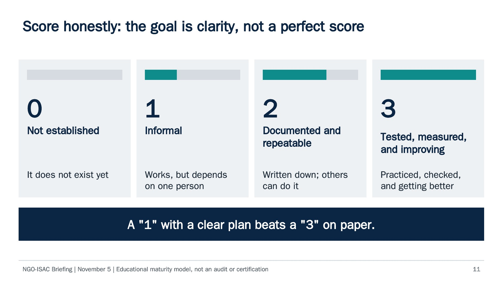
Slide 11 text
Score honestly: the goal is clarity, not a perfect score
0
Not established
It does not exist yet
1
Informal
Works, but depends on one person
2
Documented and repeatable
Written down; others can do it
3
Tested, measured, and improving
Practiced, checked, and getting better
A "1" with a clear plan beats a "3" on paper.
NGO-ISAC Briefing | November 5 | Educational maturity model, not an audit or certification
11
12 / 24 Your quick check: eight questions, Red, Yellow, or Green
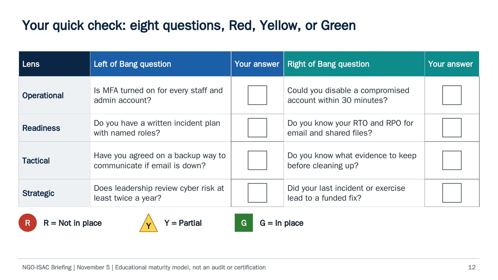
Slide 12 text
Your quick check: eight questions, Red, Yellow, or Green
Lens
Left of Bang question
Your answer
Right of Bang question
Your answer
Operational
Is MFA turned on for every staff and admin account?
Could you disable a compromised account within 30 minutes?
Readiness
Do you have a written incident plan with named roles?
Do you know your RTO and RPO for email and shared files?
Tactical
Have you agreed on a backup way to communicate if email is down?
Do you know what evidence to keep before cleaning up?
Strategic
Does leadership review cyber risk at least twice a year?
Did your last incident or exercise lead to a funded fix?
R
R = Not in place
Y
Y = Partial
G
G = In place
NGO-ISAC Briefing | November 5 | Educational maturity model, not an audit or certification
12
13 / 24 The biggest gap is not always the top priority
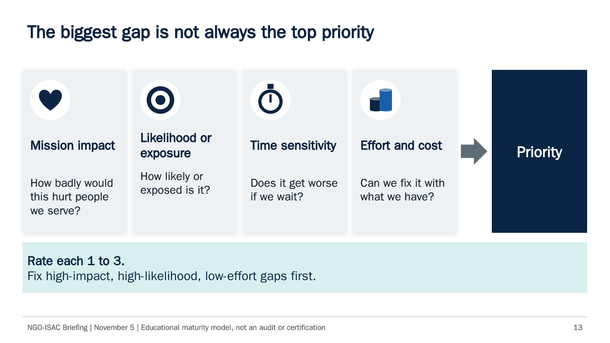
Slide 13 text
The biggest gap is not always the top priority
Mission impact
How badly would this hurt people we serve?
Likelihood or exposure
How likely or exposed is it?
Time sensitivity
Does it get worse if we wait?
Effort and cost
Can we fix it with what we have?
Priority
Rate each 1 to 3.
Fix high-impact, high-likelihood, low-effort gaps first.
NGO-ISAC Briefing | November 5 | Educational maturity model, not an audit or certification
13
14 / 24 Illustrative example: "Harbor Community Services" (fictional)
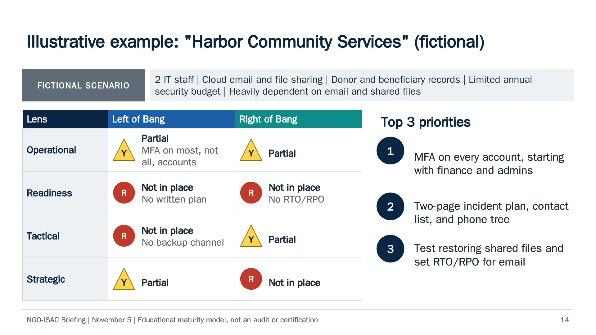
Slide 14 text
Illustrative example: "Harbor Community Services" (fictional)
FICTIONAL SCENARIO
2 IT staff | Cloud email and file sharing | Donor and beneficiary records | Limited annual security budget | Heavily dependent on email and shared files
Lens
Left of Bang
Right of Bang
Operational
Y
Partial
MFA on most, not all, accounts
Y
Partial
Readiness
R
Not in place
No written plan
R
Not in place
No RTO/RPO
Tactical
R
Not in place
No backup channel
Y
Partial
Strategic
Y
Partial
R
Not in place
Top 3 priorities
1
MFA on every account, starting with finance and admins
2
Two-page incident plan, contact list, and phone tree
3
Test restoring shared files and set RTO/RPO for email
NGO-ISAC Briefing | November 5 | Educational maturity model, not an audit or certification
14
15 / 24 90 days to stronger resilience, sized for a small team
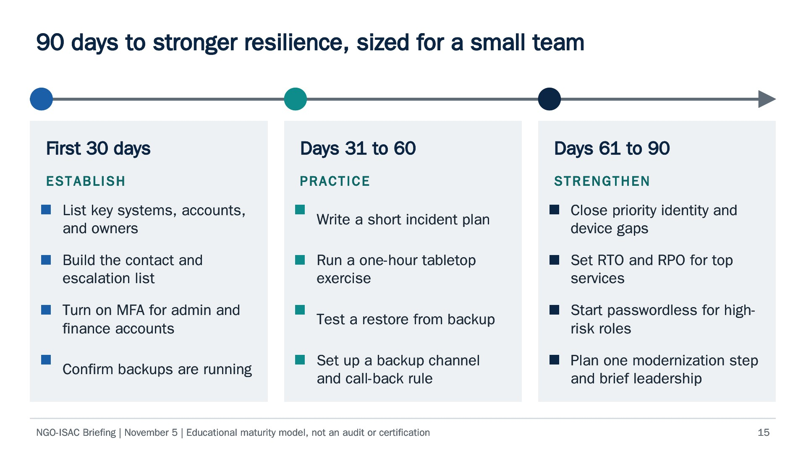
Slide 15 text
90 days to stronger resilience, sized for a small team
First 30 days
ESTABLISH
List key systems, accounts, and owners
Build the contact and escalation list
Turn on MFA for admin and finance accounts
Confirm backups are running
Days 31 to 60
PRACTICE
Write a short incident plan
Run a one-hour tabletop exercise
Test a restore from backup
Set up a backup channel and call-back rule
Days 61 to 90
STRENGTHEN
Close priority identity and device gaps
Set RTO and RPO for top services
Start passwordless for high-risk roles
Plan one modernization step and brief leadership
NGO-ISAC Briefing | November 5 | Educational maturity model, not an audit or certification
15
16 / 24 Minimum viable resilience: start here
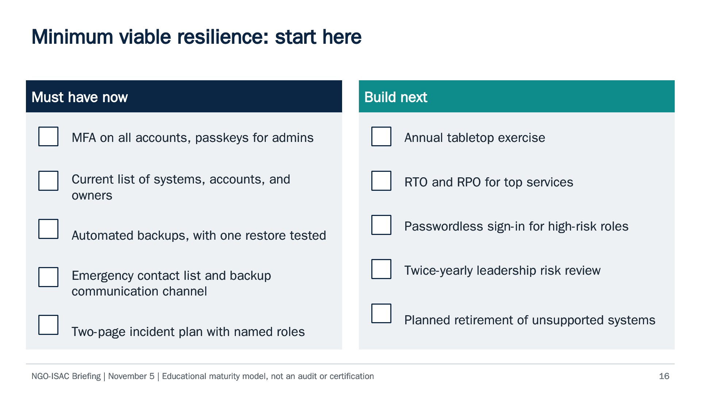
Slide 16 text
Minimum viable resilience: start here
Must have now
MFA on all accounts, passkeys for admins
Current list of systems, accounts, and owners
Automated backups, with one restore tested
Emergency contact list and backup communication channel
Two-page incident plan with named roles
Build next
Annual tabletop exercise
RTO and RPO for top services
Passwordless sign-in for high-risk roles
Twice-yearly leadership risk review
Planned retirement of unsupported systems
NGO-ISAC Briefing | November 5 | Educational maturity model, not an audit or certification
16
17 / 24 Four things to take back to your organization
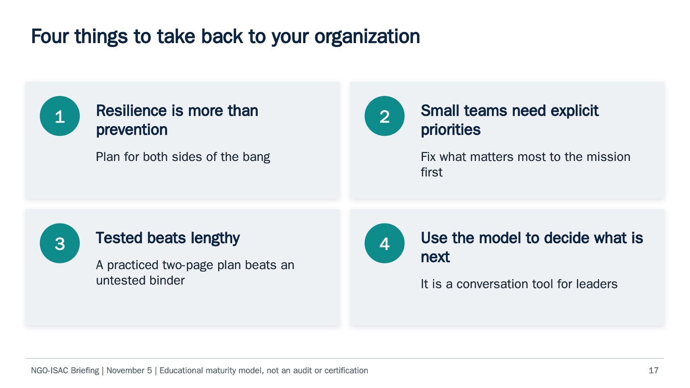
Slide 17 text
Four things to take back to your organization
1
Resilience is more than prevention
Plan for both sides of the bang
2
Small teams need explicit priorities
Fix what matters most to the mission first
3
Tested beats lengthy
A practiced two-page plan beats an untested binder
4
Use the model to decide what is next
It is a conversation tool for leaders
NGO-ISAC Briefing | November 5 | Educational maturity model, not an audit or certification
17
18 / 24 Let us apply the model together
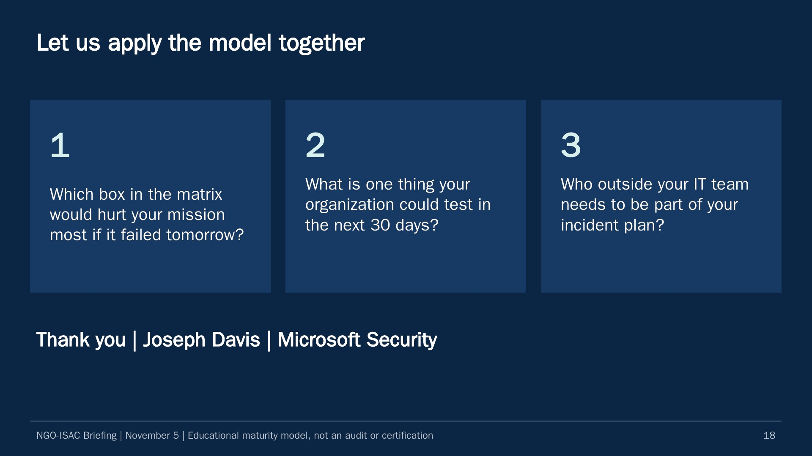
Slide 18 text
Let us apply the model together
1
Which box in the matrix would hurt your mission most if it failed tomorrow?
2
What is one thing your organization could test in the next 30 days?
3
Who outside your IT team needs to be part of your incident plan?
Thank you | Joseph Davis | Microsoft Security
NGO-ISAC Briefing | November 5 | Educational maturity model, not an audit or certification
18
19 / 24 Appendix
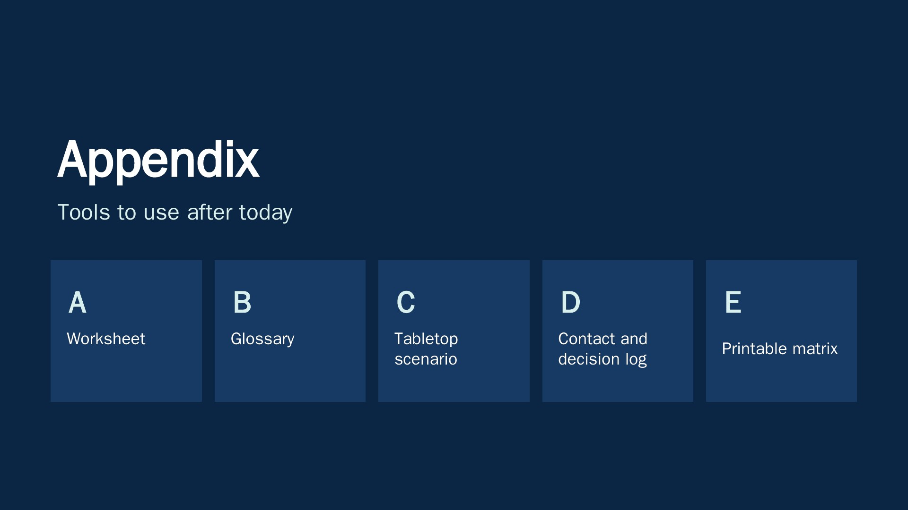
Slide 19 text
Appendix
Tools to use after today
A
Worksheet
B
Glossary
C
Tabletop scenario
D
Contact and decision log
E
Printable matrix
20 / 24 Appendix A: Detailed self-assessment worksheet
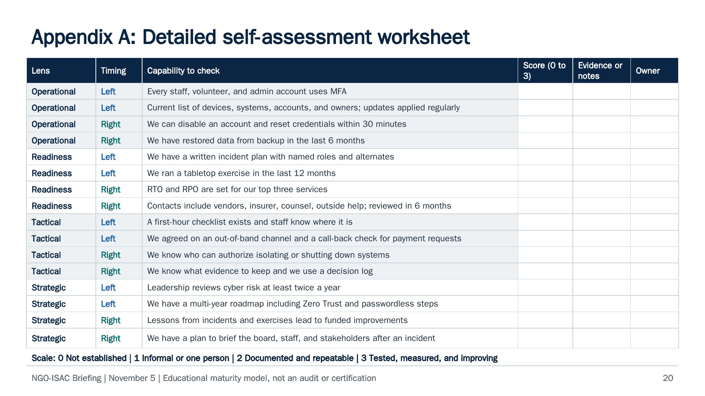
Slide 20 text
Appendix A: Detailed self-assessment worksheet
Lens
Timing
Capability to check
Score (0 to 3)
Evidence or notes
Owner
Operational
Left
Every staff, volunteer, and admin account uses MFA
Operational
Left
Current list of devices, systems, accounts, and owners; updates applied regularly
Operational
Right
We can disable an account and reset credentials within 30 minutes
Operational
Right
We have restored data from backup in the last 6 months
Readiness
Left
We have a written incident plan with named roles and alternates
Readiness
Left
We ran a tabletop exercise in the last 12 months
Readiness
Right
RTO and RPO are set for our top three services
Readiness
Right
Contacts include vendors, insurer, counsel, outside help; reviewed in 6 months
Tactical
Left
A first-hour checklist exists and staff know where it is
Tactical
Left
We agreed on an out-of-band channel and a call-back check for payment requests
Tactical
Right
We know who can authorize isolating or shutting down systems
Tactical
Right
We know what evidence to keep and we use a decision log
Strategic
Left
Leadership reviews cyber risk at least twice a year
Strategic
Left
We have a multi-year roadmap including Zero Trust and passwordless steps
Strategic
Right
Lessons from incidents and exercises lead to funded improvements
Strategic
Right
We have a plan to brief the board, staff, and stakeholders after an incident
Scale: 0 Not established | 1 Informal or one person | 2 Documented and repeatable | 3 Tested, measured, and improving
NGO-ISAC Briefing | November 5 | Educational maturity model, not an audit or certification
20
21 / 24 Appendix B: Glossary
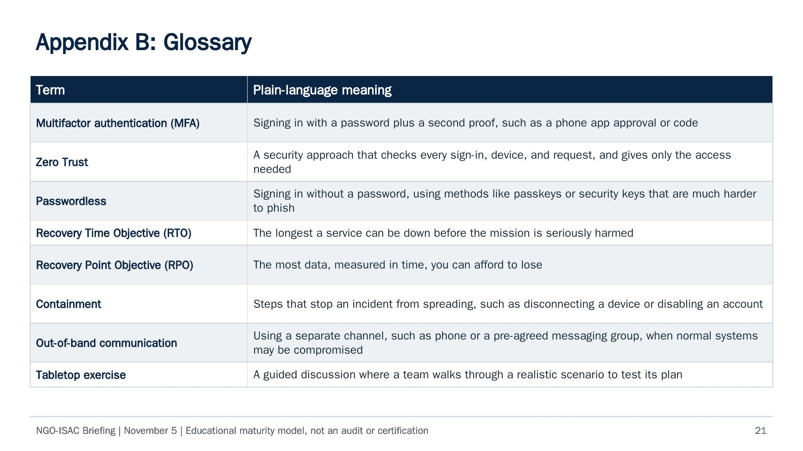
Slide 21 text
Appendix B: Glossary
Term
Plain-language meaning
Multifactor authentication (MFA)
Signing in with a password plus a second proof, such as a phone app approval or code
Zero Trust
A security approach that checks every sign-in, device, and request, and gives only the access needed
Passwordless
Signing in without a password, using methods like passkeys or security keys that are much harder to phish
Recovery Time Objective (RTO)
The longest a service can be down before the mission is seriously harmed
Recovery Point Objective (RPO)
The most data, measured in time, you can afford to lose
Containment
Steps that stop an incident from spreading, such as disconnecting a device or disabling an account
Out-of-band communication
Using a separate channel, such as phone or a pre-agreed messaging group, when normal systems may be compromised
Tabletop exercise
A guided discussion where a team walks through a realistic scenario to test its plan
NGO-ISAC Briefing | November 5 | Educational maturity model, not an audit or certification
21
22 / 24 Appendix C: Sample tabletop exercise scenario
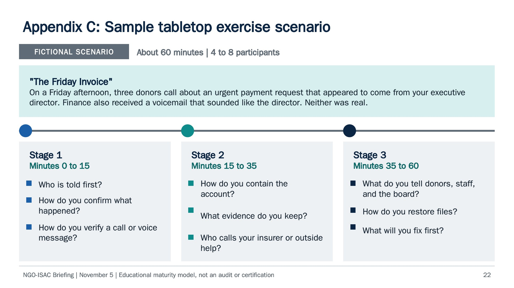
Slide 22 text
Appendix C: Sample tabletop exercise scenario
FICTIONAL SCENARIO
About 60 minutes | 4 to 8 participants
"The Friday Invoice"
On a Friday afternoon, three donors call about an urgent payment request that appeared to come from your executive director. Finance also received a voicemail that sounded like the director. Neither was real.
Stage 1
Minutes 0 to 15
Who is told first?
How do you confirm what happened?
How do you verify a call or voice message?
Stage 2
Minutes 15 to 35
How do you contain the account?
What evidence do you keep?
Who calls your insurer or outside help?
Stage 3
Minutes 35 to 60
What do you tell donors, staff, and the board?
How do you restore files?
What will you fix first?
NGO-ISAC Briefing | November 5 | Educational maturity model, not an audit or certification
22
23 / 24 Appendix D: Incident contact and decision log
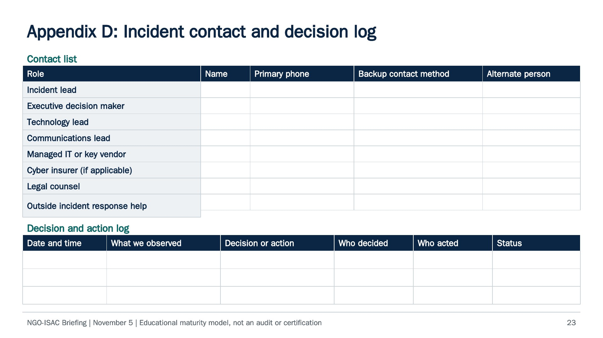
Slide 23 text
Appendix D: Incident contact and decision log
Contact list
Role
Name
Primary phone
Backup contact method
Alternate person
Incident lead
Executive decision maker
Technology lead
Communications lead
Managed IT or key vendor
Cyber insurer (if applicable)
Legal counsel
Outside incident response help
Decision and action log
Date and time
What we observed
Decision or action
Who decided
Who acted
Status
NGO-ISAC Briefing | November 5 | Educational maturity model, not an audit or certification
23
24 / 24 Appendix E: One-page maturity matrix (printable)
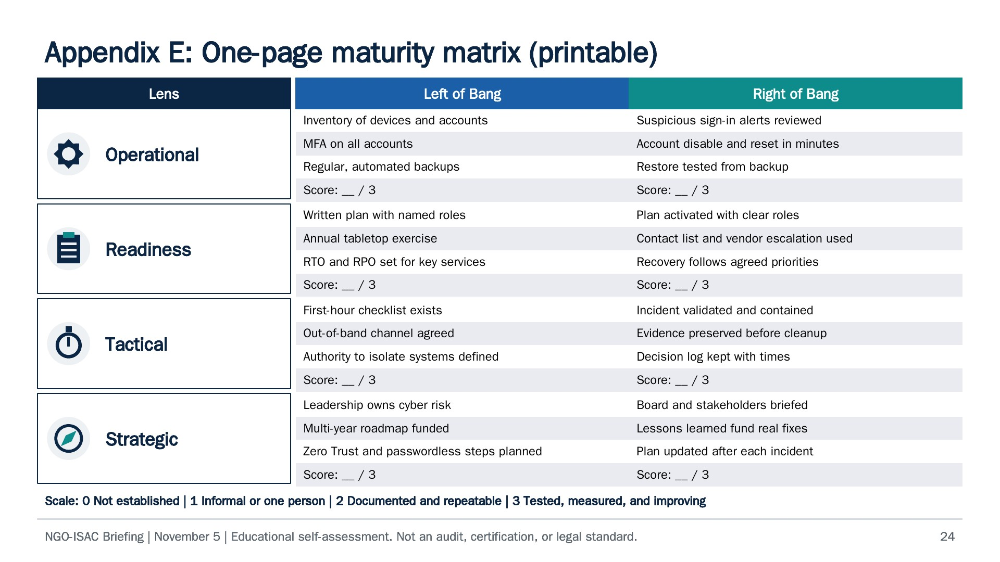
Slide 24 text
Appendix E: One-page maturity matrix (printable)
Left of Bang
Right of Bang
Lens
Inventory of devices and accounts
Suspicious sign-in alerts reviewed
MFA on all accounts
Account disable and reset in minutes
Regular, automated backups
Restore tested from backup
Score: __ / 3
Score: __ / 3
Operational
Written plan with named roles
Plan activated with clear roles
Annual tabletop exercise
Contact list and vendor escalation used
RTO and RPO set for key services
Recovery follows agreed priorities
Score: __ / 3
Score: __ / 3
Readiness
First-hour checklist exists
Incident validated and contained
Out-of-band channel agreed
Evidence preserved before cleanup
Authority to isolate systems defined
Decision log kept with times
Score: __ / 3
Score: __ / 3
Tactical
Leadership owns cyber risk
Board and stakeholders briefed
Multi-year roadmap funded
Lessons learned fund real fixes
Zero Trust and passwordless steps planned
Plan updated after each incident
Score: __ / 3
Score: __ / 3
Strategic
Scale: 0 Not established | 1 Informal or one person | 2 Documented and repeatable | 3 Tested, measured, and improving
NGO-ISAC Briefing | November 5 | Educational self-assessment. Not an audit, certification, or legal standard.
24